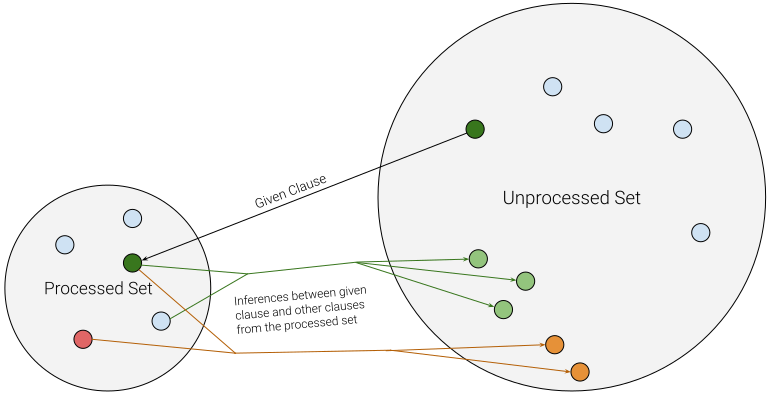

Ph.D. Proposal Talk
Jack McKeown
Advised by Geoff Sutcliffe
Outline
- First-Order Logic & CNF
- Saturation-based ATP
- Given Clause Selection
- E heuristics
-
Relevant Previous Work
- Enigma-NG
- TRAIL
- DeepMind Hindsight Experience Replay
- Reinforcement Learning
- Proximal Policy Optimization
- My RL Setup for Given Clause Selection
- Results / Analysis / Plots
- Possible Directions for Future Research
First Order Logic
- Boolean constants (from propositional logic)
- Logical connectives (from propositional logic)
- A domain of non-booleans
- Existentially ($\exists$) and universally ($\forall$) quantified variables over that domain.
- Functions (that map domain elements to other domain elements)
- Predicates (truth valued functions)
Clause Normal Form
This first order statement:
$$ \forall X \exists Y : p(X,f(Y)) \; | \; (q(X)\wedge q(Y))$$
becomes
$$ \underbrace{p(X, f(sk(X))) \; | \; q(X)}_{clause} \;\; \bigwedge \;\; \underbrace{p(X, f(sk(X))) \; | \;q(sk(X))}_{clause} $$
in Conjunctive/Clause Normal Form (CNF).
(In CNF all variables are universally quantified.)
(In CNF all variables are universally quantified.)
Saturation
- Saturation: Computing the closure of a set of formulae with respect to a set of inference rules
- Typically directed towards deriving the empty clause as a proof by contradiction
- (Intuition: the empty clause must be false because if the empty clause were true, then every clause would need to be as well:
$empty | false \equiv false$)
Saturation-based Theorem Proving
Prove conjecture, $C$, by showing that the following clause set is contradictory (unsatisfiable) via saturation:
CNF(axioms $\cup$ $\{\sim C\}$)
CNF(axioms $\cup$ $\{\sim C\}$)
- Processed Set: All possible resolutions have already been formed within this group and added to the Unprocessed set. (This set remains saturated)
- Unprocessed Set: Inferences from new "given-clauses" go here. This set grows much faster.
Given Clause Selection
- Improving given clause selection is a core goal of ATP research
Given Clause Selection Queues in E
$\leftarrow$
$...$
$\leftarrow$
$...$
$\leftarrow$
$...$
$\leftarrow$
$...$
GCS as Supervised Learning
- A new CEF to be learned: $f$
- Clause representation is important and linked with model architecture
- $f$
is trained from successful proofs:
- positive examples are selections of clauses that ended up in the final proof.
- negative examples are all other given clause selections
- Usually relies on consistent signature
- Highly unbalanced training data
Drawbacks
Previous Work: ENIGMA
- Efficient LearNing-based Inference Guiding Machine
- Many features counting occurrences of various tree walks
- Feature hashing
- CEF score given by "in-proofness" classifier probability
- Negated Conjecture Clause Features
- Recursive Neural Network
- XGBoost > LibLinear > NN
 $p(X,f(sk(X),g(b),g(Y)))$
$p(X,f(sk(X),g(b),g(Y)))$
Previous Work: TRAIL
- Trial Reasoner for AI that Learns
- Efficient vectorization as in ENIGMA
- Full processed set context
- First saturation based RL method
- Each context clause votes on its "favorite" unprocessed clause
- Didn't beat E, but substantially improved base prover performance (Beagle)
Previous Work: TRAIL (architecture)

Previous Work: Hindsight Experience Replay
- Hindsight Experience Replay (DeepMind - 2017)
- Solves problem of limited/discontinuous training data using "hindsight goals"
- Implements a CEF and is another "in-proofness" classifier
- Transformer network with graph laplacian positional embeddings
RL / Policy Gradients
- States, Actions and Rewards
- Policy: $\pi(s) = a$ $\sum_a \pi(s,a) = 1$
- Goal: Maximize expected future discounted rewards
- Policy Gradient Loss: $\displaystyle\frac{1}{T}\sum_{t=1}^T [$ $-\log{(\pi(s_t,a_t))}$ $\cdot $ $R_t$ $]$
- Reducing Variance: $\displaystyle\frac{1}{T}\sum_{t=1}^T [$ $-\log{(\pi(s_t,a_t))}$ $\cdot $ $A_t$ $]$
- $A_t$ $=$ $R_t$ $- V(s_t)$
Proximal Policy Optimization (PPO)
- Simpler successor to Trust Region Policy Optimization (TRPO)
- Main Idea: Learn from the same data multiple times in
mini-batches
without drastically affecting the current policy. - A special loss limits the gradient so that $0.8\pi_{old}(s,a) \leq \pi(s,a) \leq 1.2\pi_{old}(s,a)$
- $r_t(\theta) = \frac{\pi_{\theta}(a_t | s_t)}{\pi_{\theta_{old}}(a_t | s_t)}$
- $L_{actor}(\theta) = \displaystyle\frac{1}{T}\sum_{t=1}^T [min($ $r_t(\theta)A_t$ $, $ $clip(r_t(\theta),1-\epsilon, 1+\epsilon)A_t$ $)]$
RL in E
- States: $($ $t$, $|P|$, $|U|$, $W(P)$, $W(U)$ $)$
- Actions: choice from a fixed set of CEFs
- Rewards: given for selection of proof clauses
Note: the rewards are calculated retrospectively after the end of a proof attempt
Experiment Architecture

CEF Selection
- If CEFs are actions, which actions should be possible?
- For each dataset, all CEFs ever used by --auto on those problems
- ~40 CEFs for each dataset
Approaches Compared
- --auto: E's mode that analyzes a problem to choose a fixed heuristic
-
Round Robin:
A round-robin schedule over the chosen CEFs
(A normal E heuristic with all ones for weights) -
Learned Categorical:
Randomly samples from a learned categorical distribution
(Ignores the RL state entirely) -
Distilled Categorical:
The previous policy reduced into a standard E heuristic.
(Removes the randomness and named pipe overhead) - Neural Network: A shallow neural network policy
Experiment Details
- CPU Limit for proof attempts: 60 seconds
- 75 seconds were given when testing the RL models to account for latency caused by the named pipe communication
SLH Result Table
| Run | Solved | Solved vs Auto | Processed | Processed vs Auto | Generated | Proof Clauses | Efficiency | |
|---|---|---|---|---|---|---|---|---|
| SLHRoundRobin | 748.6 | + 98.6 , - 29.2 | 1492.59 | -2268.00 | 4796.21 | 11.51 | 0.024369628 | |
| SLHConstCatDistilled_gain5_ | 745.6 | +100.0 , - 33.6 | 1636.00 | -2113.97 | 5518.08 | 11.67 | 0.023222676 | |
| SLHNN | 735.2 | + 94.6 , - 38.6 | 1671.66 | -2066.91 | 5757.04 | 11.76 | 0.024004336 | |
| SLHConstCat | 735.2 | + 93.8 , - 37.8 | 1660.98 | -2015.63 | 5690.13 | 11.77 | 0.024753276 | |
| SLHRoundRobinAllOnes | 728.4 | + 91.4 , - 42.2 | 1562.64 | -2009.59 | 5617.02 | 11.77 | 0.025121361 | |
| SLHAuto | 679.2 | + 0.0 , - 0.0 | 1869.95 | 0.00 | 10963.13 | 11.10 | 0.016930621 |
VBT Result Table
| Run | Solved | Solved vs Auto | Processed | Processed vs Auto | Generated | Proof Clauses | Efficiency | |
|---|---|---|---|---|---|---|---|---|
| VBTConstCatDistilled_gain5_ | 609.2 | + 94.8 , - 13.0 | 2241.31 | -650.90 | 31921.01 | 12.41 | 0.015359553 | |
| VBTConstCat | 583.2 | + 75.8 , - 20.0 | 2061.25 | -623.66 | 32983.52 | 12.67 | 0.016450104 | |
| VBTRoundRobin | 568.2 | + 53.8 , - 13.0 | 1928.93 | -412.63 | 34709.00 | 12.94 | 0.015339280 | |
| VBTNN | 560.8 | + 57.0 , - 23.6 | 1854.33 | -558.98 | 34194.56 | 12.56 | 0.015525148 | |
| VBTRoundRobinAllOnes | 540.2 | + 43.0 , - 30.2 | 1643.44 | -582.00 | 33291.75 | 12.73 | 0.016816789 | |
| VBTAuto | 527.4 | + 0.0 , - 0.0 | 1727.11 | 0.00 | 35068.73 | 12.59 | 0.014308966 |
MPTPTP2078 Result Table
| Run | Solved | Solved vs Auto | Processed | Processed vs Auto | Generated | Proof Clauses | Efficiency | |
|---|---|---|---|---|---|---|---|---|
| MPTNN | 246.4 | + 25.0 , - 8.8 | 443.56 | -2413.80 | 833.77 | 25.56 | 0.295987830 | |
| MPTConstCat | 245.8 | + 25.0 , - 9.4 | 456.53 | -2388.32 | 822.91 | 25.55 | 0.295591068 | |
| MPTConstCatDistilled_gain5_ | 245.2 | + 24.8 , - 9.8 | 450.32 | -2199.28 | 1090.46 | 25.71 | 0.264860238 | |
| MPTRoundRobinAllOnes | 243.8 | + 23.0 , - 9.4 | 416.78 | -2405.30 | 843.93 | 25.63 | 0.295204483 | |
| MPTRoundRobin | 242.0 | + 22.6 , - 10.8 | 555.46 | -2223.53 | 1045.81 | 25.71 | 0.275407996 | |
| MPTAuto | 230.2 | + 0.0 , - 0.0 | 861.47 | 0.00 | 2745.62 | 23.98 | 0.232237375 |
Summary of Results
- The biggest impact on problems solved was the "strategy aggregation" done to determine the set of actions (CEFs)
- Distilled ConstCat outperforms ConstCat and NN on SLH and VBT, but not MPT
- NN failed to outperform ConstCat (the state is not very helpful)
Analysis / Plots
Future Research
-
Explore alternate definitions of states and actions
- Augment state with a history of past states and actions (frame stacking)